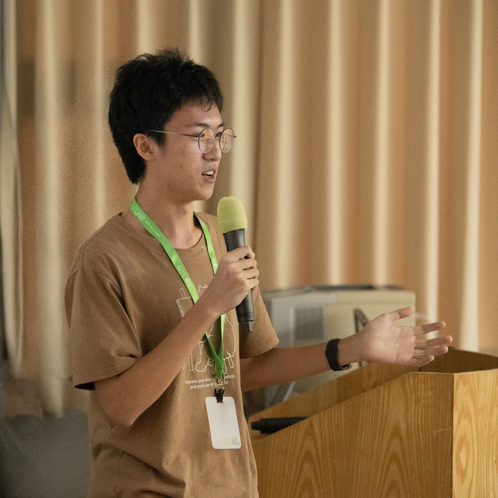

NSYSU Sizihwan Digital Identity

rocket_launch
🚀
Building Backend & Tech Communities • Open to Collab
location_on
Kaohsiung, Taiwan • NSYSU Campus
badge
Dept. of Computer Science & Engineering
Computer Science and Engineering
terminal
Dept. CSE
GDGoC Lead
劉鈞淵 (Chun-Yuan Liu / bruh0422)
國立中山大學 National Sun Yat-sen University • Backend Architect & Open Source Community Lead
中山大學資工系學生，熱衷於後端系統架構、非同步微服務、雲端自動化與開源社群。現任 GDG on Campus NSYSU Lead，同時投入 SITCON 與 g0v 社群籌備；曾打造服務 6,000+ 伺服器的 Discord 機器人架構並經營託管雲端基礎設施。熱愛將工程邏輯轉化為社群影響力，持續探索雲端技術與 AI 應用的無限邊界。
format_quote
“用穩健的高可用後端系統，連結充滿活力的開源技術社群。”
groups
🌐
GDGoC Lead
社群領導
國立中山大學分會
smart_toy
🤖
6,000+ Guilds
Discord 機器人規模
高並發 asyncio 與音訊運算叢集
terminal
🏕️
SITCON Camp
基礎設施與維運籌備
場務與校園網路計算系統支援
bolt
⚡
Cloud & AI
生產環境架構
FastAPI, Mongo, Redis, CI/CD 流程
verified_user
Authentic NSYSU Identity